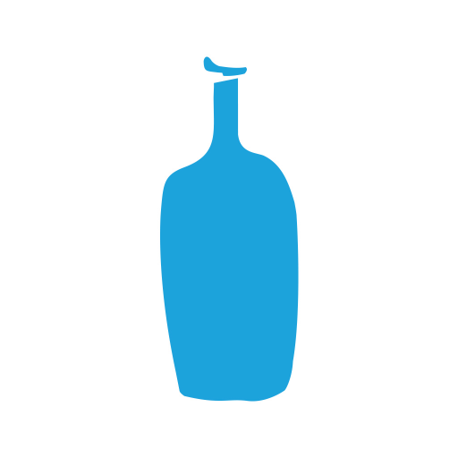

<!DOCTYPE html>
<html>

<head>
  <meta charset="UTF-8" />
  <meta http-equiv="X-UA-Compatible" content="IE=edge" />
  <meta name="viewport"
    content="width=device-width, initial-scale=1.0, maximum-scale=1.0, minimum-scale=1.0, user-scalable=no" />
  <link rel="stylesheet" href="./style.css">
  <title>간단한 지도 표시하기</title>
  <script type="text/javascript" src="https://openapi.map.naver.com/openapi/v3/maps.js?ncpClientId=ia4i567onk"></script>
</head>

<body>
  <div id="map" style="width: 50%; height: 600px"></div>
  <script>
    const yeoido = new naver.maps.LatLng(37.525817, 126.928338);
    const myungdong = new naver.maps.LatLng(37.563498, 126.983001);
    const gwangha = new naver.maps.LatLng(37.56941, 126.978827);
    const samchung = new naver.maps.LatLng(37.58016, 126.980847);
    const samchungHanok = new naver.maps.LatLng(37.580052, 126.980938);
    const hannam = new naver.maps.LatLng(37.536095, 127.005211);
    const sungsu = new naver.maps.LatLng(37.548074, 127.045691);
    const yeoksam = new naver.maps.LatLng(37.499717, 127.032378);
    const apgujeong = new naver.maps.LatLng(37.525708, 127.02885);
    const jeju = new naver.maps.LatLng(33.433223, 126.750818);

    const map = new naver.maps.Map("map", {
      center: new naver.maps.LatLng(37.551048, 126.988012), //중심으로 하는 지도(서울시청으로...만만하니깐)
      zoom: 14,
      logoControl: false,
      mapDataControl: false,
      scaleControl: false,
    });

    let marker1ConStr = [
      '<div class="hj_inner">',
      "<h3>블루보틀 여의도 카페</h3>",
      "<p>서울 영등포구 여의대로 108 더현대서울점 5층 <br>",
      ' <br>',
      "운영시간 : 10 : 30 ~ 21 : 00 <br>",
      '<a href="https://www.bluebottlecoffeekorea.com/" target="_blank">https://www.bluebottlecoffeekorea.com/</a>',
      "</p>",
      "</div>",
    ].join(""); //marker1ConStr
    let marker1 = new naver.maps.Marker({
      position: yeoido,
      map: map,
      icon: {
        url: "./img/marker.png",
        size: new naver.maps.Size(22, 35),
        origin: new naver.maps.Point(0, 0),
        anchor: new naver.maps.Point(11, 35)
      }
    }); //marker1
    let infoWin1 = new naver.maps.InfoWindow({
      content: marker1ConStr,
      borderWidth: 0,
      backgroundColor: "rgb(0,161,223)",
    }); //infoWin1
    naver.maps.Event.addListener(marker1, "click", (e) => {
      infoWin1.getMap() ? infoWin1.close() : infoWin1.open(map, marker1);
    }); //addListener
    /* marker1 -------------------------------------------------------------------------------------------------------------------- */
    let marker2ConStr = [
      '<div class="hj_inner">',
      "<h3>블루보틀 명동 카페</h3>",
      "<p>서울특별시 중구 명동길 14 1층 <br>",
      ' <br>',
      "운영시간 : 08 : 00 ~ 21 : 00 <br>",
      '<a href="https://www.bluebottlecoffeekorea.com/" target="_blank">https://www.bluebottlecoffeekorea.com/</a>',
      "</p>",
      "</div>",
    ].join(""); //marker2ConStr
    let marker2 = new naver.maps.Marker({
      position: myungdong,
      map: map,
      icon: {
        url: "./img/marker.png",
        size: new naver.maps.Size(22, 35),
        origin: new naver.maps.Point(0, 0),
        anchor: new naver.maps.Point(11, 35)
      }
    }); //marker2
    let infoWin2 = new naver.maps.InfoWindow({
      content: marker2ConStr,
    }); //infoWin2
    naver.maps.Event.addListener(marker2, "click", (e) => {
      infoWin2.getMap() ? infoWin2.close() : infoWin2.open(map, marker2);
    }); //addListener
    /* marker2 -------------------------------------------------------------------------------------------------------------------- */
    let marker3ConStr = [
      '<div class="hj_inner">',
      "<h3>블루보틀 광화문 카페</h3>",
      "<p>서울특별시 종로구 청계천로 11 <br>",
      ' <br>',
      "운영시간 : 10 : 30 ~ 21 : 00(주중) | 09 : 00 ~ 20 : 00(주말) <br>",
      '<a href="https://www.bluebottlecoffeekorea.com/" target="_blank">https://www.bluebottlecoffeekorea.com/</a>',
      "</p>",
      "</div>",
    ].join(""); //marker3ConStr
    let marker3 = new naver.maps.Marker({
      position: gwangha,
      map: map,
      icon: {
        url: "./img/marker.png",
        size: new naver.maps.Size(22, 35),
        origin: new naver.maps.Point(0, 0),
        anchor: new naver.maps.Point(11, 35)
      }
    }); //marker3
    let infoWin3 = new naver.maps.InfoWindow({
      content: marker3ConStr,
    }); //infoWin3
    naver.maps.Event.addListener(marker3, "click", (e) => {
      infoWin3.getMap() ? infoWin3.close() : infoWin3.open(map, marker3);
    }); //addListener
    /* marker3 -------------------------------------------------------------------------------------------------------------------- */
    let marker4ConStr = [
      '<div class="hj_inner">',
      "<h3>블루보틀 삼청 카페</h3>",
      "<p>서울특별시 종로구 북촌로5길 76 <br>",
      ' <br>',
      "운영시간 : 09 : 00 ~ 20 : 00 <br>",
      '<a href="https://www.bluebottlecoffeekorea.com/" target="_blank">https://www.bluebottlecoffeekorea.com/</a>',
      "</p>",
      "</div>",
    ].join(""); //marker4ConStr
    let marker4 = new naver.maps.Marker({
      position: samchung,
      map: map,
      icon: {
        url: "./img/marker.png",
        size: new naver.maps.Size(22, 35),
        origin: new naver.maps.Point(0, 0),
        anchor: new naver.maps.Point(11, 35)
      }
    }); //marker4
    let infoWin4 = new naver.maps.InfoWindow({
      content: marker4ConStr,
    }); //infoWin4
    naver.maps.Event.addListener(marker4, "click", (e) => {
      infoWin4.getMap() ? infoWin4.close() : infoWin4.open(map, marker4);
    }); //addListener
    /* marker4 -------------------------------------------------------------------------------------------------------------------- */
    let marker5ConStr = [
      '<div class="hj_inner">',
      "<h3>블루보틀 삼청 한옥</h3>",
      "<p>서울특별시 종로구 삼청로2길 40-3 <br>",
      ' <br>',
      "운영시간 : 12 : 00 ~ 20 : 00 <br>",
      '<a href="https://www.bluebottlecoffeekorea.com/" target="_blank">https://www.bluebottlecoffeekorea.com/</a>',
      "</p>",
      "</div>",
    ].join(""); //marker5ConStr
    let marker5 = new naver.maps.Marker({
      position: samchungHanok,
      map: map,
      icon: {
        url: "./img/marker.png",
        size: new naver.maps.Size(22, 35),
        origin: new naver.maps.Point(0, 0),
        anchor: new naver.maps.Point(11, 35)
      }
    }); //marker5
    let infoWin5 = new naver.maps.InfoWindow({
      content: marker5ConStr,
    }); //infoWin5
    naver.maps.Event.addListener(marker5, "click", (e) => {
      infoWin5.getMap() ? infoWin5.close() : infoWin5.open(map, marker5);
    }); //addListener
    /* marker5 -------------------------------------------------------------------------------------------------------------------- */
    let marker6ConStr = [
      '<div class="hj_inner">',
      "<h3>블루보틀 한남 카페</h3>",
      "<p>서울특별시 용산구 한남대로 91 <br>",
      ' <br>',
      "운영시간 : 09 : 00 ~ 20 : 00(주중) | 08 : 00 ~ 20 : 00(주말) <br>",
      '<a href="https://www.bluebottlecoffeekorea.com/" target="_blank">https://www.bluebottlecoffeekorea.com/</a>',
      "</p>",
      "</div>",
    ].join(""); //marker6ConStr
    let marker6 = new naver.maps.Marker({
      position: hannam,
      map: map,
      icon: {
        url: "./img/marker.png",
        size: new naver.maps.Size(22, 35),
        origin: new naver.maps.Point(0, 0),
        anchor: new naver.maps.Point(11, 35)
      }
    }); //marker6
    let infoWin6 = new naver.maps.InfoWindow({
      content: marker6ConStr,
    }); //infoWin6
    naver.maps.Event.addListener(marker6, "click", (e) => {
      infoWin6.getMap() ? infoWin6.close() : infoWin6.open(map, marker6);
    }); //addListener
    /* marker6 -------------------------------------------------------------------------------------------------------------------- */
    let marker7ConStr = [
      '<div class="hj_inner">',
      "<h3>블루보틀 성수 카페</h3>",
      "<p>서울특별시 성동구 아차산로 7 <br>",
      ' <br>',
      "운영시간 : 08 : 00 ~ 20 : 00 <br>",
      '<a href="https://www.bluebottlecoffeekorea.com/" target="_blank">https://www.bluebottlecoffeekorea.com/</a>',
      "</p>",
      "</div>",
    ].join(""); //marker7ConStr
    let marker7 = new naver.maps.Marker({
      position: sungsu,
      map: map,
      icon: {
        url: "./img/marker.png",
        size: new naver.maps.Size(22, 35),
        origin: new naver.maps.Point(0, 0),
        anchor: new naver.maps.Point(11, 35)
      }
    }); //marker7
    let infoWin7 = new naver.maps.InfoWindow({
      content: marker7ConStr,
    }); //infoWin7
    naver.maps.Event.addListener(marker7, "click", (e) => {
      infoWin7.getMap() ? infoWin7.close() : infoWin7.open(map, marker7);
    }); //addListener
    /* marker7 -------------------------------------------------------------------------------------------------------------------- */
    let marker8ConStr = [
      '<div class="hj_inner">',
      "<h3>블루보틀 역삼 카페</h3>",
      "<p>서울특별시 강남구 테헤란로 129 강남N타워 <br>",
      ' <br>',
      "운영시간 : 08 : 00 ~ 20 : 00 <br>",
      '<a href="https://www.bluebottlecoffeekorea.com/" target="_blank">https://www.bluebottlecoffeekorea.com/</a>',
      "</p>",
      "</div>",
    ].join(""); //marker8ConStr
    let marker8 = new naver.maps.Marker({
      position: yeoksam,
      map: map,
      icon: {
        url: "./img/marker.png",
        size: new naver.maps.Size(22, 35),
        origin: new naver.maps.Point(0, 0),
        anchor: new naver.maps.Point(11, 35)
      }
    }); //marker8
    let infoWin8 = new naver.maps.InfoWindow({
      content: marker8ConStr,
    }); //infoWin8
    naver.maps.Event.addListener(marker8, "click", (e) => {
      infoWin8.getMap() ? infoWin8.close() : infoWin8.open(map, marker8);
    }); //addListener
    /* marker8 -------------------------------------------------------------------------------------------------------------------- */
    let marker9ConStr = [
      '<div class="hj_inner">',
      "<h3>블루보틀 압구정 카페</h3>",
      "<p>서울특별시 강남구 논현로 854 <br>",
      ' <br>',
      "운영시간 : 08 : 00 ~ 20 : 00 <br>",
      '<a href="https://www.bluebottlecoffeekorea.com/" target="_blank">https://www.bluebottlecoffeekorea.com/</a>',
      "</p>",
      "</div>",
    ].join(""); //marker9ConStr
    let marker9 = new naver.maps.Marker({
      position: apgujeong,
      map: map,
      icon: {
        url: "./img/marker.png",
        size: new naver.maps.Size(22, 35),
        origin: new naver.maps.Point(0, 0),
        anchor: new naver.maps.Point(11, 35)
      }
    }); //marker9
    let infoWin9 = new naver.maps.InfoWindow({
      content: marker9ConStr,
    }); //infoWin9
    naver.maps.Event.addListener(marker9, "click", (e) => {
      infoWin9.getMap() ? infoWin9.close() : infoWin9.open(map, marker9);
    }); //addListener
    /* marker9 -------------------------------------------------------------------------------------------------------------------- */
    let marker10ConStr = [
      '<div class="hj_inner">',
      "<h3>블루보틀 제주 카페</h3>",
      "<p>제주특별자치도 제주시 구좌읍 번영로 2133-30 <br>",
      ' <br>',
      "운영시간 : 09 : 00 ~ 19 : 00 <br>",
      '<a href="https://www.bluebottlecoffeekorea.com/" target="_blank">https://www.bluebottlecoffeekorea.com/</a>',
      "</p>",
      "</div>",
    ].join(""); //marker10ConStr
    let marker10 = new naver.maps.Marker({
      position: jeju,
      map: map,
      icon: {
        url: "./img/marker.png",
        size: new naver.maps.Size(22, 35),
        origin: new naver.maps.Point(0, 0),
        anchor: new naver.maps.Point(11, 35)
      }
    }); //marker10
    let infoWin10 = new naver.maps.InfoWindow({
      content: marker10ConStr,
    }); //infoWin10
    naver.maps.Event.addListener(marker10, "click", (e) => {
      infoWin10.getMap() ? infoWin10.close() : infoWin10.open(map, marker10);
    }); //addListener
      /* marker10 -------------------------------------------------------------------------------------------------------------------- */
  </script>
</body>

</html>